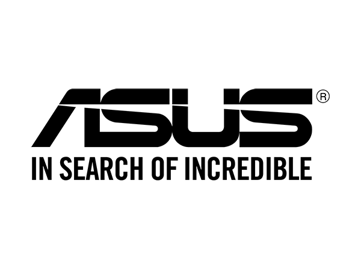
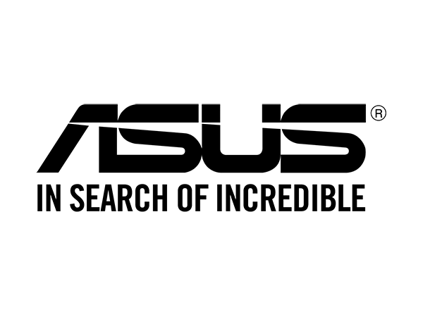

10h | JOB - Sales Promoter
10h | JOB - Sales Promoter
Dates sous contrat : 2 septembre (10-18h), 16 septembre (10-12h30), 23 septembre (10h30-18h).
Formation : 31 aout (10-12h30).
Travaillant déjà depuis plusieurs mois pour Microsoft en tant que représentant, il m'a été proposé de rejoindre, pour une courte période, l'équipe ASUS.
L'entreprise cherchait à compléter son équipe des Pays-Bas faisant un tour du BeNeLux pour parler plus précisément des atouts de Windows 10.
Quoi de mieux pour eux que d'engager temporairement des représentants Microsoft ?
La marque en elle-même ne m'était pas inconnue au niveau des ordinateurs portables, composants pour ordinateurs, projecteurs et écrans d'ordinateur.
Il nous a été possible de voir leur futur appareil mobile, le Zenfone Max, modèle officiellement présenté et commercialisé début 2018.
Leur but de nous avoir présenté leur appareil mobile est de nous montrer leur intérêt d'être présent sur différents secteurs dans le marché européen et la qualité de production irréprochable.
Tout s'est enchaîné assez rapidement, car entre la rencontre avec le manager BeNeLux d'Asus et la formation, une semaine s'est écoulée.
Les missions en elle-même n'ont pas été difficiles car je me retrouvais dans le même style à remplir, hormis le lieu et la marque étant tous deux différents.
J'ai eu l'occasion d'apercevoir la différence d'approche clientèle et des techniques de vente en fonction des entreprises.
De plus, j'ai eu l'occasion de pouvoir travailler en collaboration avec certains collègues auprès de Microsoft afin qu'en binôme, nous puissions être encore plus optimales et ainsi améliorer nos ventes.
Travailler au sein d'une équipe multilingue était un vrai challenge pour moi, dans le sens où comme nous n'avons pas de cours de néerlandais lors de nos études d'informatique à l'EPHEC, c'était le moment rêvé pour se réentrainer.